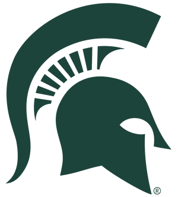
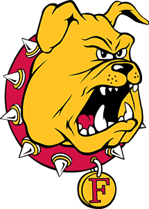

Big Ten
 Michigan
Michigan
Michigan is 8-1-0 and 1st in the NPI. Across 500 simulated seasons its median NPI finish is 2nd, with a 95% range of 1st to 12th. ELO expects about 7 wins in the next 10.
Next 10 games
- Fri, Nov 13
 vs Penn State77%
vs Penn State77% - Sat, Nov 14vs Penn State77%
- Fri, Nov 20

vs Michigan State60% - Sat, Nov 21at Michigan State45%
- Fri, Nov 27

vs Ferris State87% - Sat, Nov 28vs Ferris State87%
- Fri, Dec 4
 vs Wisconsin65%
vs Wisconsin65% - Sat, Dec 5vs Wisconsin65%
- Fri, Jan 8
 at Minnesota67%
at Minnesota67% - Sat, Jan 9at Minnesota67%
Win chances from ELO; the dot is stronger the more lopsided the game.
Projected NPI finish
500 simulated seasons, remaining games decided by ELO win chances. Dashed line: median. Shaded: 95% range.